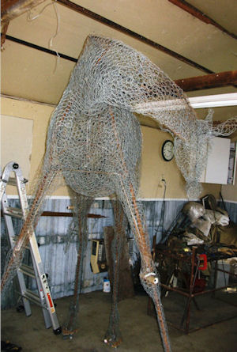

How to Lose Weight Well: The Complete Diet Plans: All the best recipes from the TV series, plus simple diet plans for healthy weight loss: Stewart, Stacie: 9781787131590: Amazon.com: Books
2021.06.22 16:25

Skip to main content .us Deliver to Czech Republic Hello, Sign in Account & Lists Returns & Orders 0 Cart All Today's Deals Customer Service Gift Cards Registry Sell Disability Customer Support Amazon's response to COVID-19 Books Advanced Search New Releases Best Sellers & More Children's Books Textbooks Textbook Rentals Best Books of the Month Paperback $12.82 Other sellers & formats Sorry, there was a problem loading this page. Try again. New & Used (25) from $12.82 Share
Other Sellers on Amazon
$20.25 + $5.81 shipping Sold by: Blackwell s U.K. *dispatched from UK* Sold by: Blackwell's U.K. *dispatched from UK* (8766 ratings) 92% positive over last 12 months In stock. Usually ships within 4 to 5 days. Shipping rates and Return policy Add to book club Loading your book clubs There was a problem loading your book clubs. Please try again. Not in a club? Learn more Join or create book clubs Choose books together Track your books Bring your club to Amazon Book Clubs, start a new book club and invite your friends to join, or find a club that’s right for you for free. Explore Amazon Book Clubs Flip to back Flip to front Listen Playing Paused You re listening to a sample of the Audible audio edition. Learn more See this image
Follow the Author
Stacie Stewart + Follow
Similar authors to follow
+ + + See more recommendations Something went wrong. Please try your request again later.
OK
How to Lose Weight Well: The Complete Diet Plans: All the best recipes from the TV series, plus simple diet plans for healthy weight loss Paperback
by Stacie Stewart (Author) › Visit Amazon's Stacie Stewart Page Find all the books, read about the author, and more. See search results for this author Are you an author? Learn about Author Central Stacie Stewart (Author) 4.0 out of 5 stars 242 ratings Read more Read less Previous page Language English Publisher BLOOMSBURRY Dimensions 9.76 x 0.67 x 7.48 inches ISBN-10 1787131599 ISBN-13 978-1787131590 See all details Next page
Enter your mobile number or email address below and we'll send you a link to download the free Kindle App. Then you can start reading Kindle books on your smartphone, tablet, or computer - no Kindle device required.
Apple Android Windows Phone Android
To get the free app, enter your mobile phone number.
or Download to your computer Mac Windows 8, 8 RT, 10 and Modern UI Windows 8 desktop, Windows 7, XP & Vista Kindle Cloud Reader Read instantly in your browser
Special offers and product promotions
Amazon Business: Make the most of your Amazon Business account with exclusive tools and savings. Login now
Product details
Language : English ISBN-10 : 1787131599 ISBN-13 : 978-1787131590 Item Weight : 1.61 pounds Dimensions : 9.76 x 0.67 x 7.48 inches Best Sellers Rank: #5,443,632 in Books ( See Top 100 in Books ) Customer Reviews: 4.0 out of 5 stars 242 ratings Brief content visible, double tap to read full content. Full content visible, double tap to read brief content.
Videos
Help others learn more about this product by uploading a video! Upload video
Customer reviews
4.0 out of 5 stars 4 out of 5 242 global ratings 5 star 55% 4 star 15% 3 star 16% 2 star 6% 1 star 8% How are ratings calculated? To calculate the overall star rating and percentage breakdown by star, we don’t use a simple average. Instead, our system considers things like how recent a review is and if the reviewer bought the item on Amazon. It also analyzes reviews to verify trustworthiness. Top reviews Most recent Top reviews
Top review from the United States
There was a problem filtering reviews right now. Please try again later.
Craig 2.0 out of 5 stars not really a selection of diet plans more a sample Reviewed in the United States on March 18, 2018 Verified Purchase not really a selection of diet plans more a sample of recipes from the TV series. If i wants a cook book I would not pick this one but that is what it is, a cook book. Read more Helpful Report abuse See all reviews
Top reviews from other countries
HelsM 3.0 out of 5 stars I REALLY want to give this more stars but Reviewed in the United Kingdom on June 5, 2018 Verified Purchase I find this book really frustrating. It ticks most of the boxes for me and I can't fault it for the approach to clean eating and a healthy lifestyle. I have a degree in Nutrition and this book is great BUT if you are going to provide all this detail and encourage macro counting, you HAVE to be spot on and I don't think this book is.
For example - day 3 of the Kickstart plan is a fasting day and women are supposed to consume 500 calories on this day. However, the 2 recipes add up to significantly more, and even deducting the macros for the ingredients you exclude from the recipes on this day, there is no way I can get the calories as low as 500. I love that the author is encouraging you to add up your own macros, but if you do not know how they have calculated theirs, it's impossible to follow the plan properly. This could have been simply resolved by giving a separate macro listing without these ingredients.
As other reviewers have said, following the plan is pretty expensive, and I personally think there is too much meat and chicken in there which undoubtedly contributes to the cost if you are buying good quality meat. I completely understand why you need this protein but I would like to see some other options.